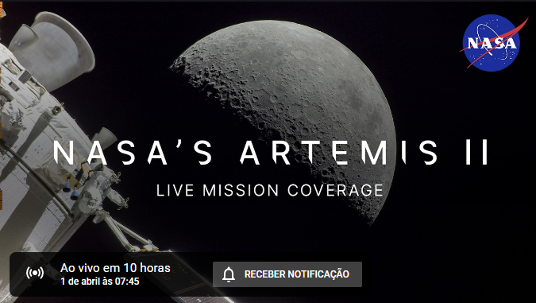
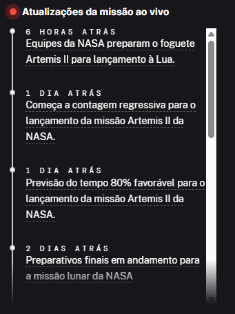
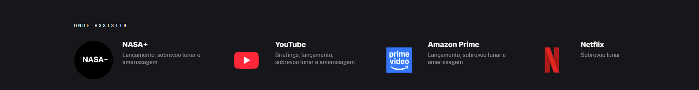

Acompanhe conosco a cobertura ao vivo da Artemis II, a primeira missão tripulada do programa Artemis, com lançamento previsto para as 18h24 (horário de Brasília) da quarta-feira, 1º de abril, no Centro Espacial Kennedy, na Flórida. A missão levará os astronautas da NASA Reid Wiseman, Victor Glover e Christina Koch, e o astronauta da CSA (Agência Espacial Canadense) Jeremy Hansen, em uma jornada de aproximadamente 10 dias ao redor da Lua. A cobertura ao vivo começa às 7h45. Detalhes da cobertura ao vivo


